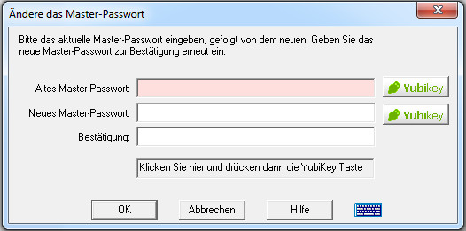

Um ein Master-Passwort ("Safe Combination") zu ändern, muss zuerst die Datenbank, deren Passwort geändert werden soll, geöffnet werden.
Einmal geöffnet, gehen Sie zum Menü Verwalten und wählen Sie Master-Passwort ändern aus.
Folgender Dialog wird dann angezeigt:

Hinweis: Wenn Sie kein YubiKey haben, werden die YubiKey Tasten nicht angezeigt,
und Sie können die untenstehende Beschreibung überspringen.
Um ein Master-Passwort zu ändern, muss zuerst die Datenbank, deren Passwort geändert werden soll, geöffnet werden.
Einmal geöffnet, gehen Sie zum Menü Verwalten und wählen Sie Master-Passwort ändern aus.
Sie sollten das derzeitige und dann zweimal das neue Master-Passwort zur Bestätigung eingeben. Zur Eingabe kann auch die virtuelle Tastatur verwendet werden.
Password Safe hat eine eingebaute Prüfung auf vermeintlich schwache Passwörter. Im Allgemeinen sollte ein Master-Passwort
(wie jedes andere Passwort auch) aus einem Mix von Buchstaben und mindestens einer Ziffer oder einem
Speziellen Zeichen (wie die Zeichen, die sich über Ziffern
auf der Tastatur befinden) bestehen. Wenn das Programm ein eingegebenes Master-Passwort als schwach einstuft, wird eine Bestätigung angefordert.
Sie haben dann die Wahl das original eingegebene (schwache) Master-Passwort anzunehmen, oder ein Neues einzugeben.
Für YubiKey Anwender:
Zusätzlich zum Ändern des Master-Passwortes wie oben beschrieben,
können Sie in diesem Dialog die YubiKey Authentifizierung hinzufügen oder entfernen,
eine zusätzliche Authentifizierung hinzufügen oder entfernen, als auch den YubiKey umschalten
der für den Zugang zur Datenbank eingesetzt wird. Hiernach werden die einzelnen Aktionen detailliert beschrieben:
YubiKey Authentifizierung hinzufügen
Der Zugang zur Password Safe Datenbank ändern vom Einsatz eines Master-Passwortes zu YubiKey:
Geben Sie das laufende Master-Passwort im Feld 'Altes Master-Passwort' ein.
YubiKey einstecken.
Wenn Sie wünschen, geben Sie ein Passwort im Feld 'Neues Master-Passwort' ein und bestätigen dies in Feld 'Bestätigung'.
Drücken Sie die untere Yubikey Taste, und aktivieren Sie dann Ihr YubiKey.
YubiKey Authentifizierung entfernen
Der Zugang zur PasswordSafe Datenbank so ändern dass nur ein Master-Passwort benötigt wird:
YubiKey einstecken.
Wenn Sie momentan ein Master-Passwort im Einsatz haben, geben Sie es im Feld 'Altes Master-Passwort' ein.
Drücken Sie die obere Yubikey Taste, und aktivieren Sie dann Ihr YubiKey.
Geben Sie im Feld 'Neues Master-Passwort' das neue Master-Passwort ein und bestätigen dies in Feld 'Bestätigung'.
Password Safe kann YubiKey als einziger Zugang benutzen, oder zusammen mit einem konventionellen Passwort. Zum Wechseln von einem zum anderen:
YubiKey einstecken.
Wenn Sie momentan ein Master-Passwort benutzen, geben Sie es im Feld 'Altes Master-Passwort' ein.
Drücken Sie die obere Yubikey Taste, und aktivieren Sie dann Ihr YubiKey.
Setzen Sie das 'Neue Master-Passwort' (und die Bestätigung) auf den gewünschten Wert: Leer um das Passwort zu entfernen, oder ein neues Master-Passwort zum hinzufügen oder ändern.
Drücken Sie die untere Yubikey Taste, und aktivieren Sie dann Ihr YubiKey.
YubiKey Ändern
Um von einem YubiKey auf einem anderen zu wechseln:
Den alten YubiKey einstecken.
Wenn Sie auch ein Master-Passwort einsetzen, geben Sie es im Feld 'Altes Master-Passwort' ein.
Drücken Sie die obere Yubikey Taste, und aktivieren Sie dann Ihr YubiKey.
Entfernen Sie den alten YubiKey, und setzen den neuen ein.
Wenn Sie es wollen, geben Sie im Feld 'Neues Master-Passwort' ein Master-Passwort ein und bestätigen dies in Feld 'Bestätigung'.
Drücken Sie die untere Yubikey Taste, und aktivieren Sie dann Ihr YubiKey.
Hinweise:
Bemerkung: Es besteht keine Möglichkeit in Password Safe verlorene oder vergessene Passwörter wieder aufzufinden.
Dies wurde im Konzept bewusst so entschieden, weil jede Art Passwortwiederherzustellung auch eine Sicherheitslücke darstellt.
Wählen Sie bitte ein schwer zu erratendes Passwort. Ein triviales Passwort wie "passwort" oder Ihr Name wäre einfach zu erraten und würde damit die Sicherheit, die Password Safe bietet, zuwiderlaufen.